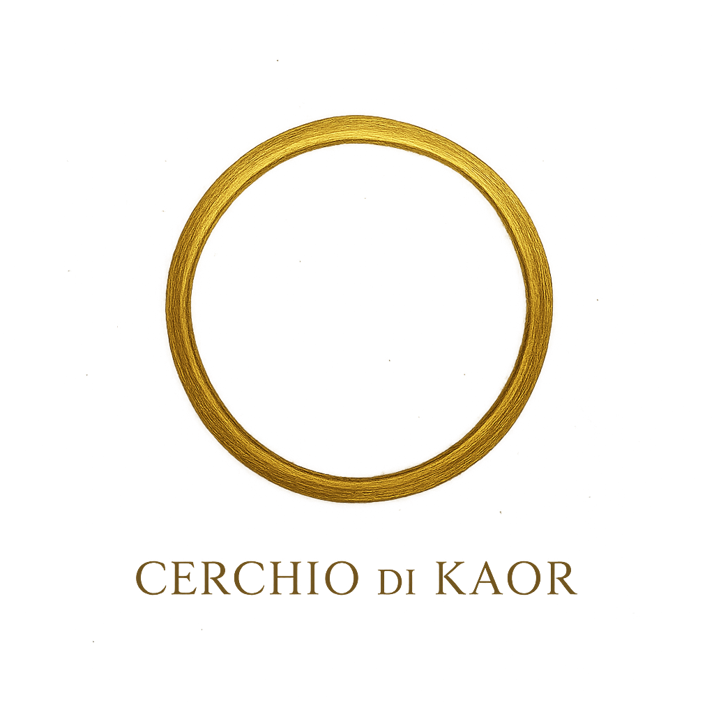

Le parole che leggerete non sono nostre.
Sono vostre. Siete stati voi a pronunciarle,
a scriverle, a lasciarle risuonare nel Cerchio.
Noi ci siamo limitati ad ascoltare.
🎧 Ascolta e rifletti
Il tuo browser non supporta l'audio HTML5.